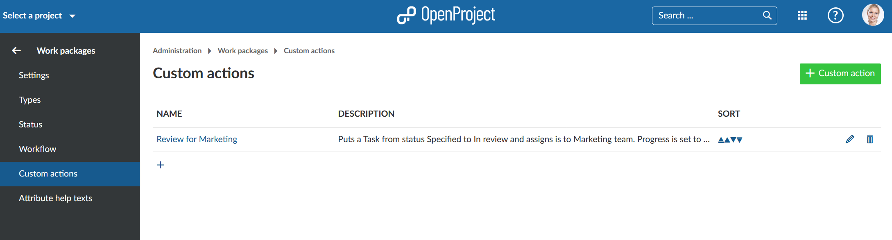
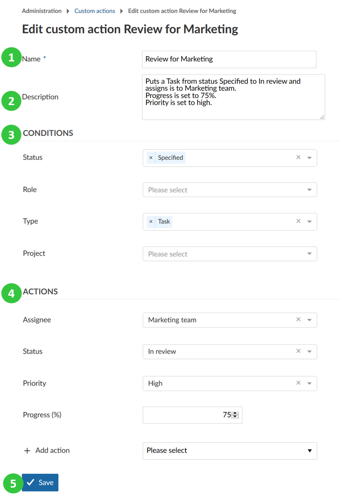
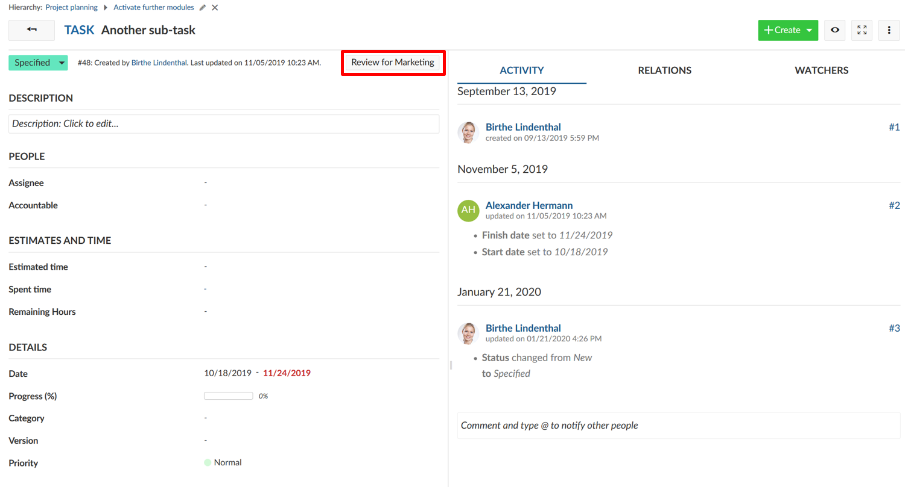
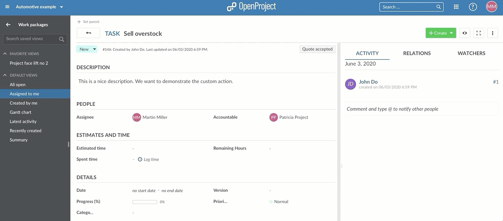
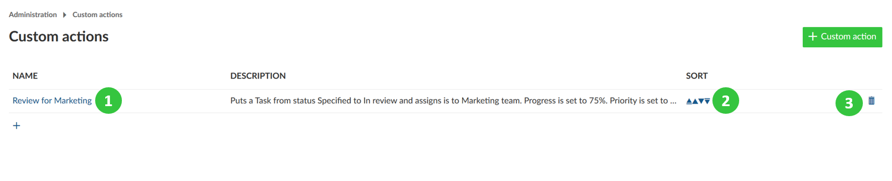

Intelligent workflows with custom actions support you to easily update several work package attributes at once with a single click on one button.
You can use custom actions to standardize your workflows, avoid errors and reduce manual work for updates.
The intelligent workflows with custom actions are a premium feature and only available for Enterprise Edition and Cloud Edition customers.
Navigate to the -> Administration -> Work packages -> Custom actions.
To create a new custom action button press the green + Custom action button.

You can now configure the Conditions and Actions for the custom action button.

If a work package is then in the defined condition, the button will appear on top of a work package and will apply the actions and changing the attributes of a work package as defined in the configuration when clicking on the button.


